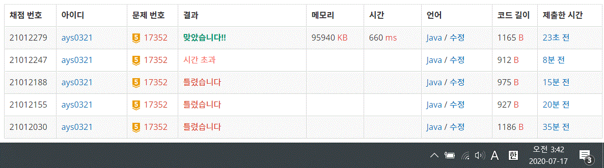

17352번 여러분의 다리가 되어 드리겠습니다!
문제요약
n개의 섬 중에 n-1개의 섬들이 연결되어 있다. 연결할 두 섬을 출력하시오.
여러 가지 방법이 있을 경우 그 중 아무거나 한 방법만 출력하시오.
public class Baekjoon17352 {
static int[] root;
static int[] rank;
public static void main(String[] args) throws IOException {
BufferedReader br = new BufferedReader(new InputStreamReader(System.in));
StringTokenizer st = new StringTokenizer(br.readLine());
int n = Integer.parseInt(st.nextToken());
root = new int[n + 1];
rank = new int[n + 1];
for (int i = 1; i <= n; i++) {
root[i] = i;
rank[i] = 0;
}
for (int i = 0; i < n - 2; i++) {
st = new StringTokenizer(br.readLine());
Union(Integer.parseInt(st.nextToken()), Integer.parseInt(st.nextToken()));
}
int r = Find(1);
for (int i = 2; i <= n; i++) {
if (r != Find(i)) {
System.out.print(r + " " + i);
break;
}
}
}
public static int Find(int x) {
if(root[x] == x){
return x;
} else {
return root[x] = Find(root[x]);
}
}
public static void Union(int x, int y) {
x = Find(x);
y = Find(y);
if(x == y)
return;
if(rank[x] < rank[y]) {
root[x] = y;
} else {
root[y] = x;
if(rank[x] == rank[y])
rank[x]++;
}
}
}
최적화된 Union Find를 사용하여 루트 노드가 다르면 연결시켜주었다.
